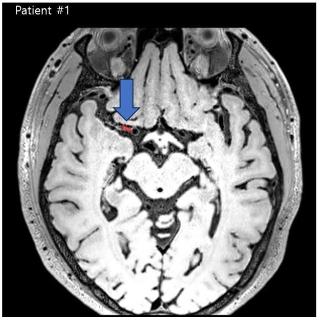
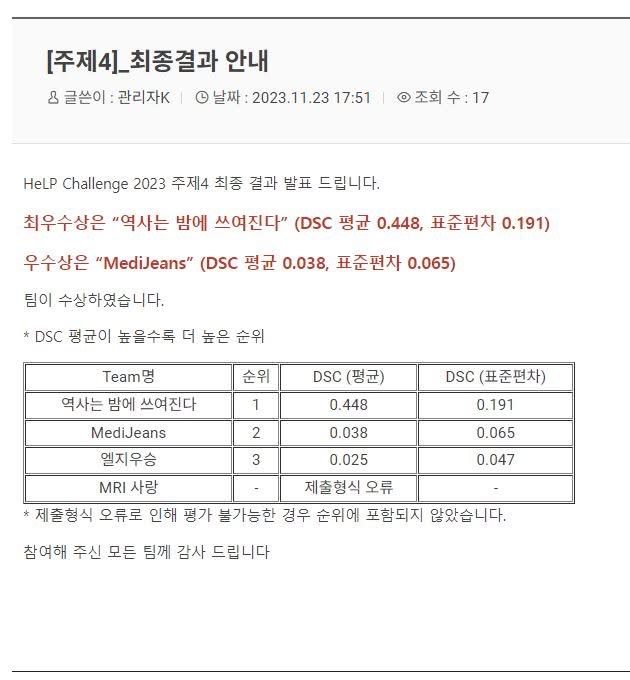

MEDICAL IMAGING · MACHINE LEARNING · CLINICAL SOFTWARE
From a clinical problem
to a method that works.
I’m Kanghoun Lee. My work connects medical imaging, medical physics, and software engineering: finding tiny lesions, generating reports from CT, addressing skin-tone imbalance, and building tools for radiotherapy.
My background includes research in Prof. Namkug Kim’s group at Asan Medical Center and clinical application work at Accuray Korea.
Report generation, region by region.
The problem
A whole-body CT spans multiple anatomical regions. The report-generation pipeline needed to handle the findings in each region.
My approach
I cropped the CT into chest, head/neck, abdomen, and pelvis regions, then generated a separate medical report for each region.
This work formed part of my AMOS-MM challenge participation in CT report generation and visual question answering.
Small lesions. A different way to segment them.
Task 4 involved segmenting vessel-wall lesions in high-resolution MRI. The targets could be almost point-like, making localization and segmentation difficult.
My contribution
I used automated cropping of lesion regions, separate segmentation models for different lesions, and probability-based combination of their outputs. Our team, 역사는 밤에 쓰여진다, ranked first. The result led to my joining Prof. Namkug Kim’s research group at Asan Medical Center.
| Rank / team | Mean DSC | SD |
|---|---|---|
| 1 · 역사는 밤에 쓰여진다 | 0.448 | 0.191 |
| 2 · MediJeans | 0.038 | 0.065 |
| 3 · 엘지우승 | 0.025 | 0.047 |
{kind=link}

{kind=link}

Addressing skin-tone imbalance.
I worked on generative skin-tone translation and augmented model training to address the underrepresentation of darker skin in dermatology datasets.
The released study dataset pairs 3,000 dermatologist-filtered light-skin clinical images from SD-260 with 3,000 synthetic counterparts simulating Fitzpatrick types V–VI, generated using an I²SB-based translation model.
Gyeonghoon Kim, Doa Kim, Jiwon Hwang, Kanghoun Lee, Changhyun Park, Seonggyu Jegal, Messay Tesfaye, Ik Jun Moon, Namkug Kim.
Journal of Investigative Dermatology · Published online August 10, 2026.
First place in the benchmark track.
Our team received the Benchmark Award. I built a multi-turn conversation driver and evaluation pipeline for Lunit/L2-preview, using paired experiments to compare prompting, inference settings, reasoning budgets, and failure recovery.
During development, the evaluated score improved from 23.57 to 54.37. These are development evaluation scores, rather than a claim about performance across all medical tasks.
Built, sold, and handed over.
PlanLabos → Accuray
I developed PlanLabos, a radiotherapy plan-evaluation platform, and sold it to Accuray. I also prepared the architecture, API, deployment, and engineering handover documentation for the technology transfer.
Further research software
My work also includes a Python treatment-planning engine using DICOM CT and RTSTRUCT, fluence optimization, MLC sequencing, and dose export, as well as software for running and evaluating treatment-planning competitions.
Treatment-planning research stack → · AccurayLab competition platform →